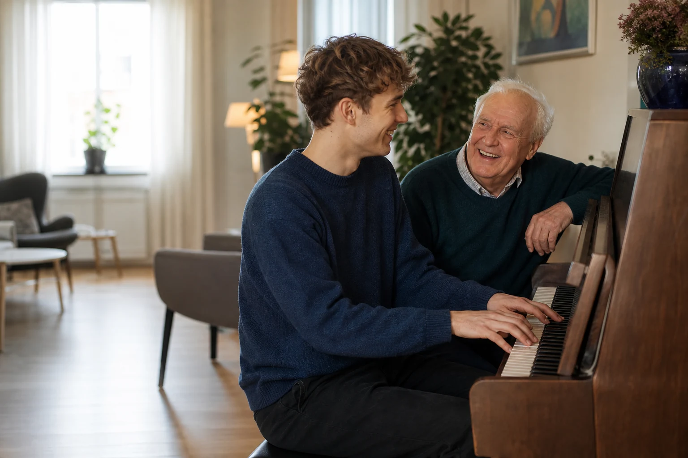

Frivillig ved siden av studiene
Erfaring som betyr noe - for flere enn deg
Gå en tur, spill musikk eller del en lunsj med en beboer på Vinderenhjemmet. Du får erfaring med kommunikasjon, relasjoner og ansvar - og en annen får en god stund å glede seg over.
Du bestemmer selv når og hvor ofte

Erfaring i virkelige møter
Det er møtene som gir ordene innhold
Det er lett å skrive at du er god med mennesker. Som studentfrivillig møter du en beboer gjennom en enkel og hyggelig aktivitet. Du øver på å lytte, bygge tillit, ta initiativ og tilpasse deg et annet menneske.
Samtidig handler besøket først og fremst om mennesket du møter. Du kommer ikke for å «øve på» noen, men for å gjøre noe sammen.
Dette er frivillig arbeid, ikke en formell praksisplass eller lønnet arbeid. Alle studieretninger er velkomne.
- Skape trygg kontakt og bygge en relasjon over tid
- Lytte aktivt og tilpasse kommunikasjonen
- Ta initiativ og ansvar for en avtalt aktivitet
- Møte ulike behov og livserfaringer med respekt
- Forstå grenser, retningslinjer og taushetsplikt
Lær og bidra gjennom noe konkret
Tre måter å bli kjent på
Velg én aktivitet, flere aktiviteter eller fortell oss at du er åpen for forslag.
-

Gå en tur sammen
Du og én beboer går en tur uten ansatte. Dere avtaler rammene på forhånd. Det gir erfaring med én-til-én-kontakt, initiativ og ansvar - og tid til en helt vanlig, god samtale.
-

Fyll rommet med musikk
Spill i et fellesrom, eller for én enkelt beboer. Det finnes piano i alle avdelinger; andre instrumenter tar du med selv. Her møtes formidling, nærvær og gleden musikk kan skape.
-

Del en lunsj
Spis gratis lunsj sammen med en beboer. Du får øve på å skape trygg samtale og være til stede i et rolig møte - uten en komplisert oppgave som må løses.
Helt uforpliktende
Hva vil du få erfaring med - og bidra med?
Velg én eller flere aktiviteter, fortell hva du studerer og når det vanligvis passer. Vi tar kontakt før noe blir avtalt.
Har du spørsmål? Ring Vestre Aker Frivilligsentral på 23 22 05 80 eller send e-post til espen@vestreaker.frivilligsentral.no.
Et samarbeid i nærmiljøet
Gode møter skapes sammen
Vestre Aker Frivilligsentral og Vinderenhjemmet samarbeider for å skape gode møter og mer aktivitet sammen med beboerne. Frivillige tilfører tid, interesser og nye samtaler - og blir godt tatt imot av personalet.